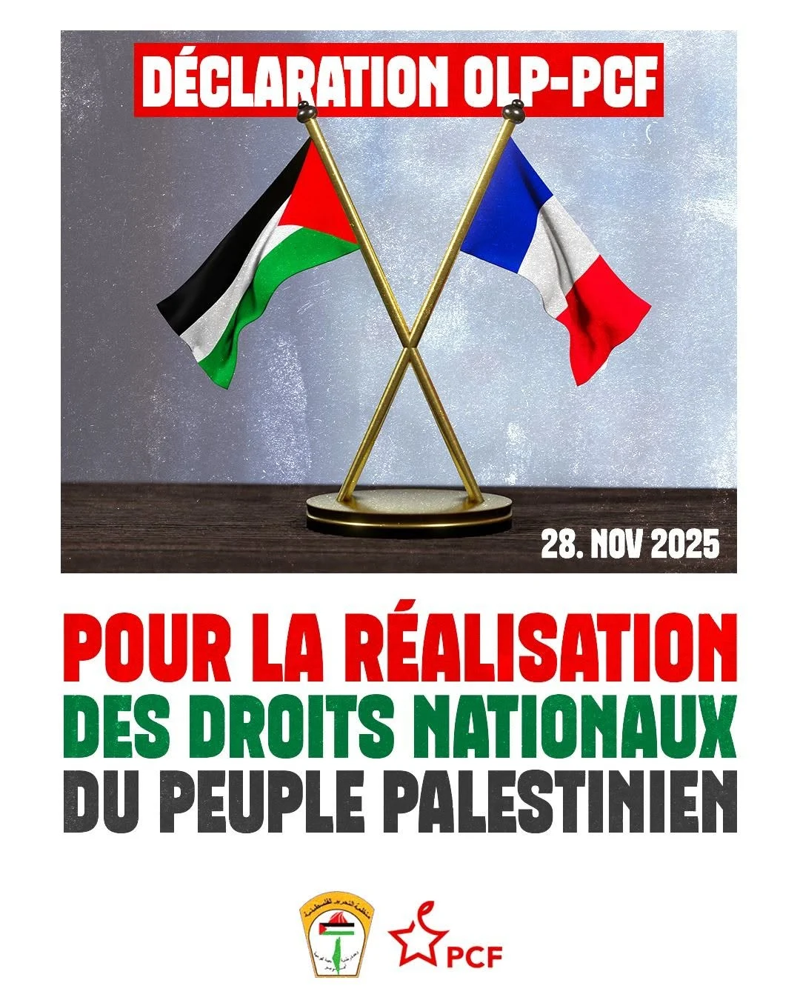

Publication relayée par le PCF 79
Déclaration commune de l’OLP et du PCF sur les droits du peuple palestinien
Date de mise à jour indiquée par Facebook · 29 novembre 2025
Texte de la publication · PCF national
Déclaration commune de l’OLP et du PCF : Pour la réalisation des droits nationaux du peuple palestinien
À la veille de la Journée internationale pour les droits du peuple palestinien, le cessez-le-feu à Gaza et la libération des otages apportent un soulagement.
Mais après deux ans d’entreprise génocidaire, d’épuration ethnique et de crimes, rien n’est réglé : les droits nationaux palestiniens restent à conquérir.
Le PCF se tient aux côtés de l’OLP pour exiger :
Un État souverain de Palestine (sur les frontières de 1967)
Des sanctions contre le gouvernement israélien & suspension de l’accord UE–Israël
Des élections libres pour le peuple palestinien.
Libération des prisonniers politiques, dont Marwan Barghouti.
Retrouvez la déclaration complète en commentaire.

Sources
PCF national · publication relayée par le PCF 79 · bibliothèque Facebook · AR-0002-FB-00943
À lire aussi · « Enfin ! » La reconnaissance de l’État de Palestine à la une de L’Humanité